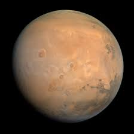

Quarto planeta a partir do Sol e o mais visível do planeta Terra, Marte possui dois satélites naturais “Fobos e Deimos”, sendo o segundo menor planeta do sistema solar, atrás de Mercúrio.Também chamado de “planeta vermelho”, devido às partículas de óxido de ferro presentes em sua atmosfera, o planeta Marte é um planeta rochoso, frio e seco. O movimento de rotação de Marte assemelha-se ao da Terra, com duração de 24 horas e 37 minutos, enquanto que o movimento de translação do planeta é de 687 dias.